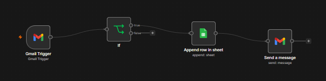

Marketing • Analytics • Strategy • Real world impact
Ideas.
Analysis.
Real impact.
Hi, I'm Afthaab, an MSc Marketing student in Manchester. I like using data, technology and creative thinking to understand why people buy, and I'm looking for technical, data-focused marketing roles.
Featured projects
Selected Work
A mix of university work and self-directed building.
Click a card to read more
Oddbox SEO and Website Audit
I checked Oddbox's website for things holding back its Google visibility, like weak content and a confusing user journey. I then suggested fixes to help more people find it and buy.
- SEO audit
- UX review
- Keyword research
AI-generated concept image, not a real product
StrategyFerrero Sharing Tub or Mochi Bites?
I tested whether Ferrero should launch a big 500ml sharing tub of its ice cream. I found it didn't fit the brand well, so I proposed bite-sized, mochi-style ice creams and checked the idea against competitors like Magnum Minis and Little Moons.
- Brand extension theory
- Competitor benchmarking
- Dickson's three tests
- Strategic writing

AutomationBuilding an AI Job-Hunting Agent
I'm building a tool that finds jobs and writes tailored CVs for me. It connects Gmail, Reed and Google Gemini.
- n8n
- JavaScript
- REST APIs
- Automation
Porsche 911 Colour Experiment
I ran an experiment with 100 people to test whether a bright car colour makes a car look more attractive than a dull one. Each person saw only one colour, and I checked for fairness and accounted for how much they liked sports cars. Bright colours won, and the result was statistically significant (p = 0.004).
- R
- A/B testing
- t-tests
- Survey design
- Data analysis
About me
From finance to marketing, curious all the way.
I started in finance, with a Bachelor of Commerce in Finance and Accountancy from Christ University. I worked in banking and global recruitment operations, where I got used to handling numbers and tight deadlines. Along the way I realised I was more curious about why people buy things than about the numbers alone, so I moved into marketing.
I'm studying for an MSc in Marketing at the University of Manchester as a Global Futures Scholarship recipient. I've done an SEO internship, run a controlled experiment in R and Python, and I'm now building my own automation tool with n8n and APIs.
I enjoy mixing data, technology and creative thinking, and I'm interested in opportunities where I can add value in technical marketing roles.
Key skills
- Marketing strategy
- Data analysis (R, Python)
- SEO & keyword research
- A/B testing & experiments
- Automation (n8n, APIs, JavaScript)
- Competitor benchmarking
Always learning,
always exploring.
Contact
Let's talk.
I'm open to technical, data-focused marketing roles. The easiest way to reach me is by email or LinkedIn.